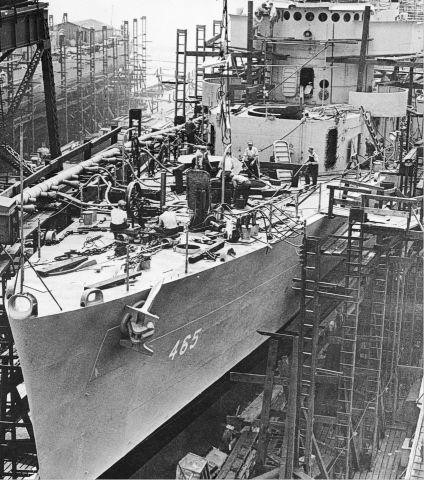
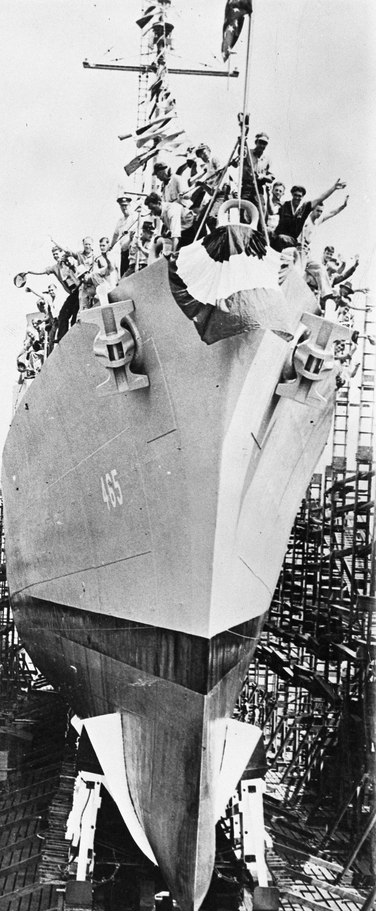
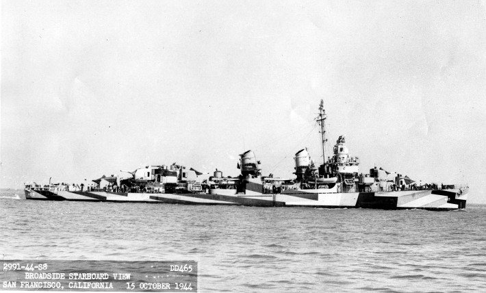

Previous
Next
USS Saufley DD-465
WWII Patrol
Historical
War Reports
Patrol Track
Awards
Crew Photos
Research
References
Reunions
Digital Research
Fold3
Naval History and Heritage Command
Wikipedia
Navsource Archives
Facebook Group
Navy Manuals and Documents Online
Final Resting Place
Official Chronology of the US Navy in World War II
Archived - USS Saufley Website
Video
USS Saufley Living Conditions 1952
Living Conditions Aboard USS Saufley 1945
Living Conditions Aboard USS Saufley 1952
Men Sleep and Bathe Aboard USS Saufley
Sailors Take Meal Aboard USS Saufley
Sailors Play Cards Aboard USS Saufley
MkI Fire Control Computer